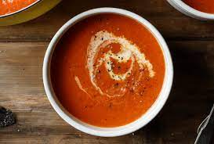

Tomato Soup Recipe

Ingredients:
- 1 can (28 ounces) crushed tomatoes
- 2 cups chicken or vegetable broth
- 1/4 cup unsalted butter
- 1 small onion, chopped
- 1/4 cup all-purpose flour
- 1/4 cup tomato paste
- 1 tablespoon sugar
- 1 teaspoon salt
- 1/4 teaspoon black pepper
- 1 cup heavy cream
Instructions:
- In a large saucepan or Dutch oven, combine crushed tomatoes and broth. Bring to a boil over medium heat, then reduce heat and simmer for 10 minutes.
- In another saucepan, melt butter over medium heat. Add onion and sauté until tender, about 5 minutes. Stir in flour and cook for 1-2 minutes.
- Add tomato paste, sugar, salt, and pepper to the onion mixture. Cook and stir for 2-3 minutes.
- Add the onion mixture to the tomato mixture and stir well. Bring to a boil over medium heat, stirring constantly. Cook and stir for 2-3 minutes or until slightly thickened.
- Remove from heat and stir in cream. Serve hot.